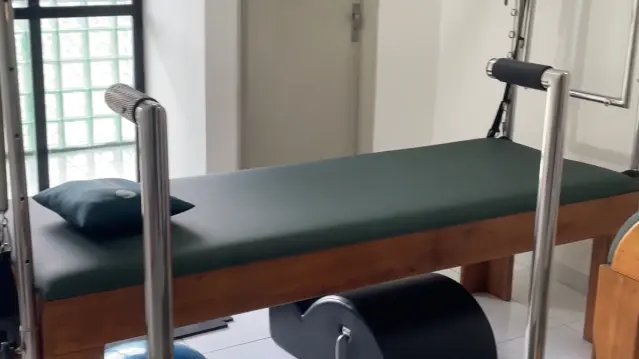

Pilates clássico
Uma prática com aparelhos e acompanhamento. Conheça a proposta das nossas aulas e consulte os horários disponíveis.
Conversar sobre pilates clássicoPilates e Fisioterapia em Caruaru
O movimento faz parte do nosso dia a dia. Conheça nosso espaço no Maurício de Nassau e converse com a gente para começar seu acompanhamento.

Conheça nossa proposta de atendimento e fale com a equipe para consultar a avaliação e os horários.
Uma prática com aparelhos e acompanhamento. Conheça a proposta das nossas aulas e consulte os horários disponíveis.
Conversar sobre pilates clássicoConverse sobre suas necessidades e saiba como funciona a avaliação para o seu atendimento.
Conversar sobre fisioterapiaConsulte nossa equipe para conhecer a proposta, a avaliação e a disponibilidade das sessões.
Conversar sobre pilates para gestantesTraga suas dúvidas. Vamos conversar sobre o seu momento.

Estamos na Avenida Rui Barbosa, 48, no Maurício de Nassau, em Caruaru. Um ambiente com aparelhos de Pilates para receber sua prática e seu acompanhamento.
Combine sua visitaCaruaru/PE
Fale com a nossa equipe para tirar dúvidas e consultar os horários de atendimento.
Acompanhe nosso InstagramPara agendar, converse com a gente pelo WhatsApp.
Falar pelo WhatsAppUse o botão do WhatsApp e conte o que procura. Nossa equipe apresenta as possibilidades de atendimento e consulta os horários com você.
Sim. Fale com a gente para conhecer o espaço, os atendimentos e como funciona a avaliação.
Av. Rui Barbosa, 48, Maurício de Nassau, Caruaru/PE, CEP 55012-080. Acesse o link de rota nesta página para abrir o endereço no Google Maps.